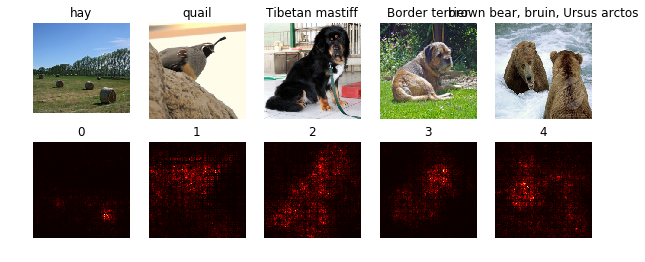

Reference:
- https://github.com/MahanFathi/CS231/blob/master/assignment3/NetworkVisualization-TensorFlow.ipynb
- https://raghakot.github.io/keras-vis/visualizations/saliency/
Saliency Maps
The idea behind saliency is pretty simple in hindsight. We compute the gradient of output category with respect to input image.
This should tell us how the output value changes with respect to a small change in inputs. We can use these gradients to highlight input regions that cause the most change in the output. Intuitively this should highlight salient image regions that most contribute towards the output.
A saliency map tells us the degree to which each pixel in the image affects the classification score for that image. To compute it, we compute the gradient of the unnormalized score corresponding to the correct class (which is a scalar) with respect to the pixels of the image. If the image has shape (H, W, 3) then this gradient will also have shape (H, W, 3); for each pixel in the image, this gradient tells us the amount by which the classification score will change if the pixel changes by a small amount. To compute the saliency map, we take the absolute value of this gradient, then take the maximum value over the 3 input channels; the final saliency map thus has shape (H, W) and all entries are nonnegative.
Usage
There are two APIs exposed to visualize saliency.
- visualize_saliency: This is the general purpose API for visualizing saliency.
- visualize_saliency_with_losses: This is intended for research use-cases where some custom weighted loss can be used.
See examples/ for code examples.
Implementation
def compute_saliency_maps(X, y, model):
"""
Compute a class saliency map using the model for images X and labels y.
Input:
- X: Input images, numpy array of shape (N, H, W, 3)
- y: Labels for X, numpy of shape (N,)
- model: A SqueezeNet model that will be used to compute the saliency map.
Returns:
- saliency: A numpy array of shape (N, H, W) giving the saliency maps for the
input images.
"""
saliency = None
# Compute the score of the correct class for each example.
# This gives a Tensor with shape [N], the number of examples.
#
# Note: this is equivalent to scores[np.arange(N), y] we used in NumPy
# for computing vectorized losses.
correct_scores = tf.gather_nd(model.classifier,
tf.stack((tf.range(X.shape[0]), model.labels), axis=1))
###############################################################################
# TODO: Implement this function. You should use the correct_scores to compute #
# the loss, and tf.gradients to compute the gradient of the loss with respect #
# to the input image stored in model.image. #
# Use the global sess variable to finally run the computation. #
# Note: model.image and model.labels are placeholders and must be fed values #
# when you call sess.run(). #
###############################################################################
dx = tf.reduce_sum(tf.gradients(correct_scores, model.image), axis=0)
saliency = sess.run(dx, feed_dict={model.image: X,
model.labels: y})
saliency = np.max(np.abs(saliency), axis=3)
##############################################################################
# END OF YOUR CODE #
##############################################################################
return saliency
Example
